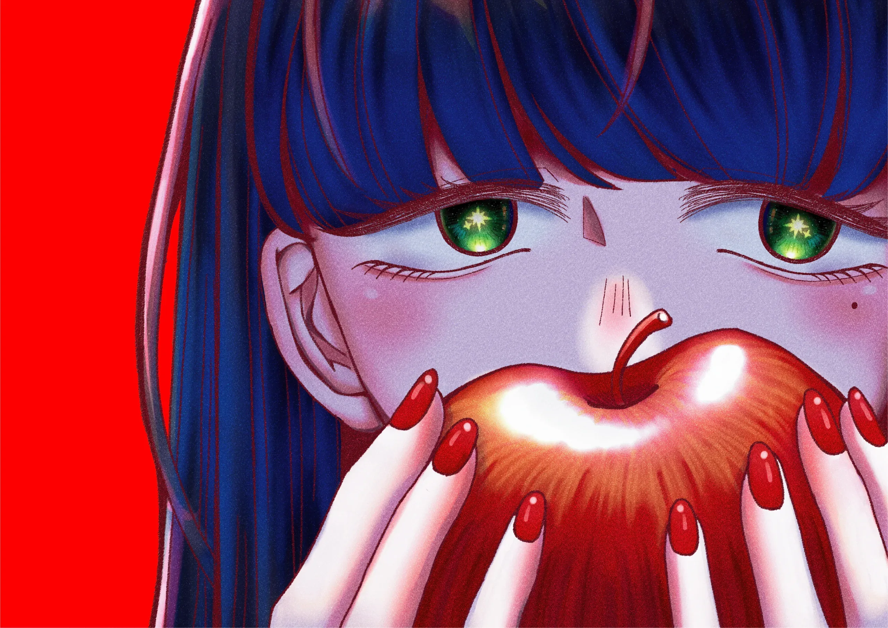
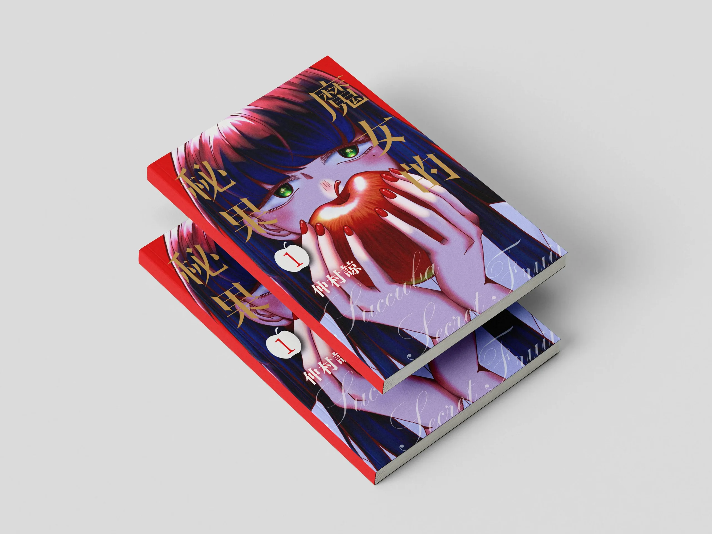
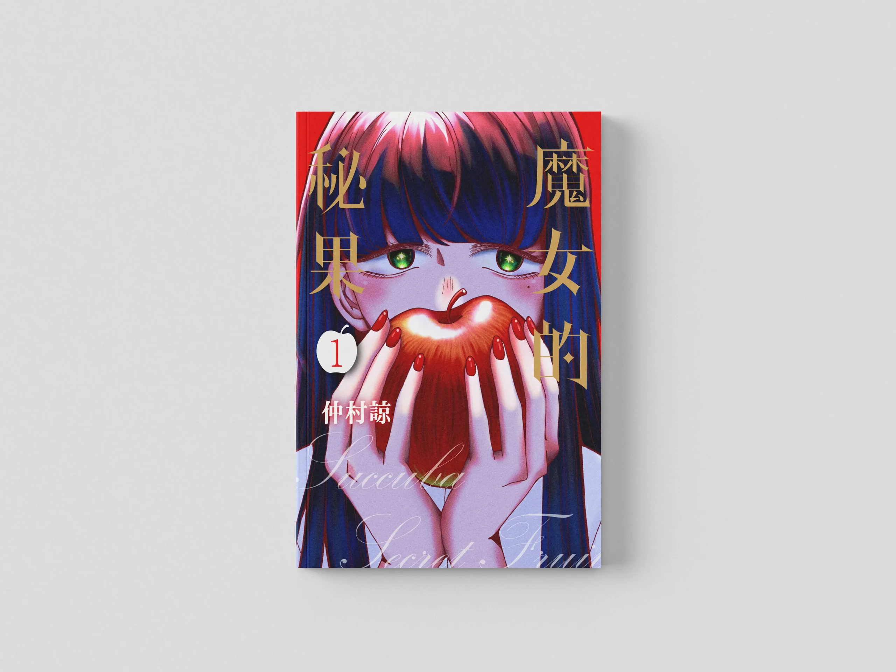
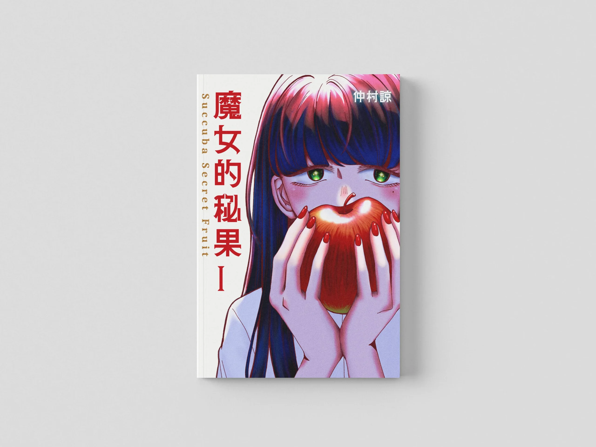

SUCCUBA SECRETFRUIT
魔女的秘果魔女の秘密の果実
虛擬封面設計｜2024架空の表紙デザイン｜2024
Design Concept｜設計概念Design Concept｜デザインコンセプト
Typography & Layout｜標準字與版面設計Typography & Layout｜ロゴタイプとレイアウト
- CATEGORY
- BOOK DESIGN/ILLUSTRATION
- SIZE
- 600 x 270 300dpi
- CREDIT
- KAYA
以演藝圈的名利誘惑為題，將禁果化為慾望象徵，運用魔女、果實與血紅色調營造神秘氛圍。聚光燈與角色眼中的光點則集中視線，強化舞台般的戲劇感。
芸能界の名声と誘惑をテーマに、禁断の果実を欲望の象徴として描きました。魔女や血を思わせる赤、スポットライトと瞳の光で、神秘的な舞台感を演出しています。
為作品設計中文標準字，並以紅金與白紅兩種封面方向，探索字體、色彩與編排帶來的不同氣質。
作品のテーマに合わせて中国語のロゴを制作し、赤と金、白と赤の2案をデザインしました。文字・色・レイアウトの違いから、異なる作品の表情を探っています。